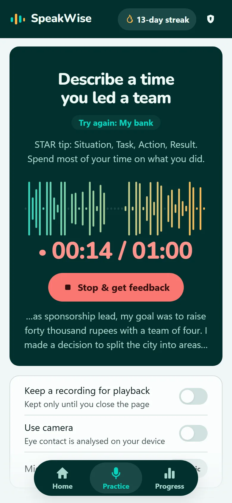
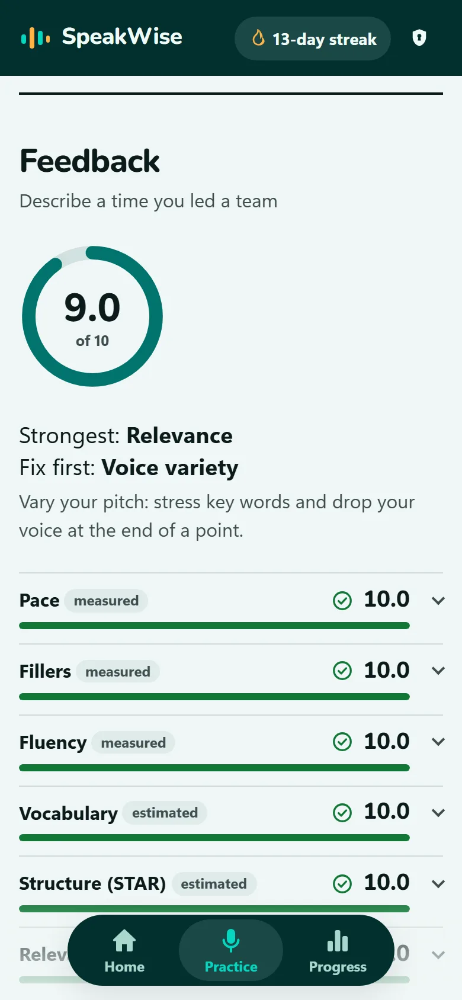
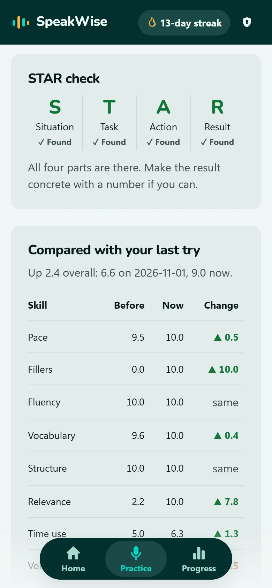
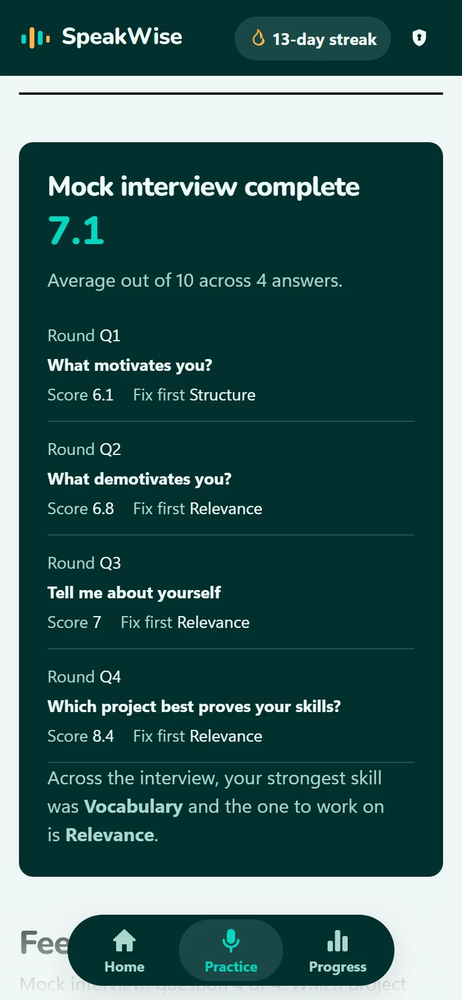
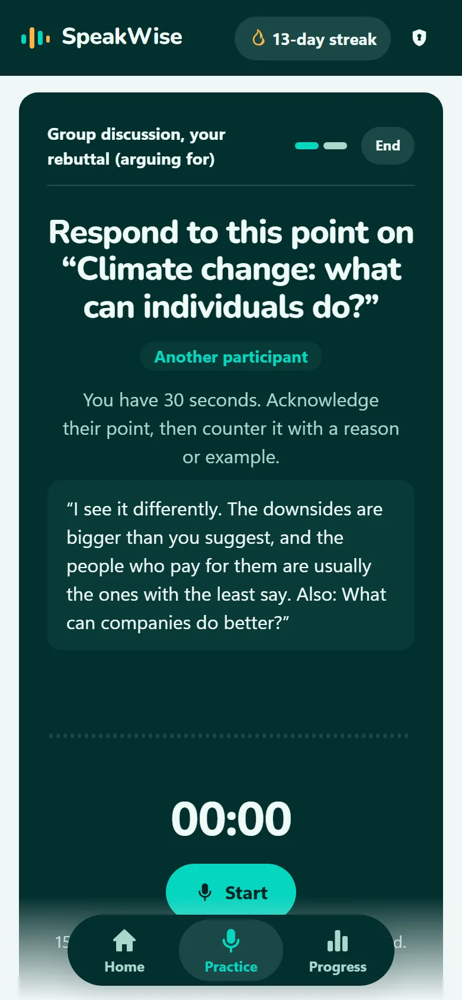
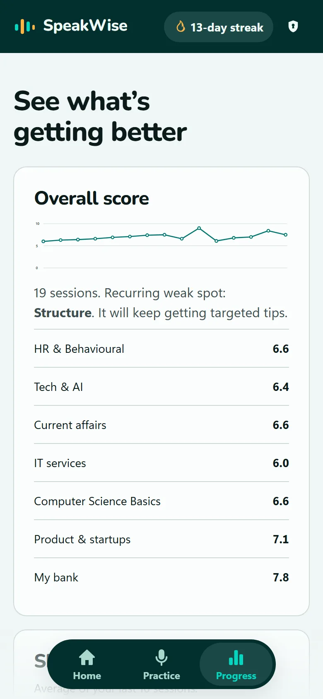
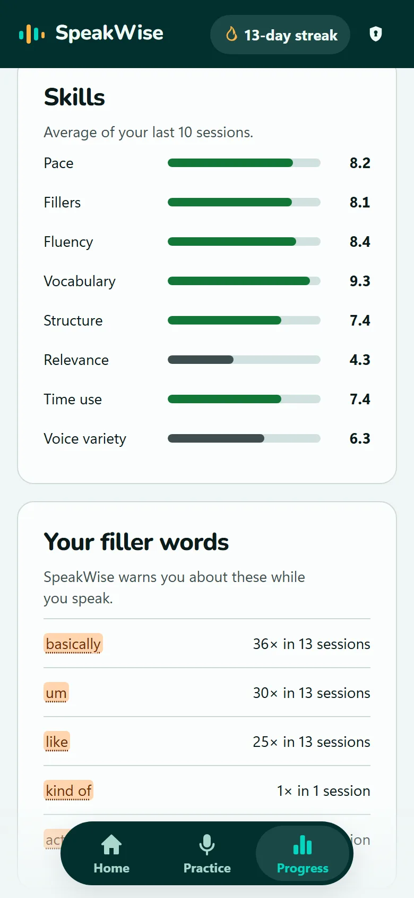
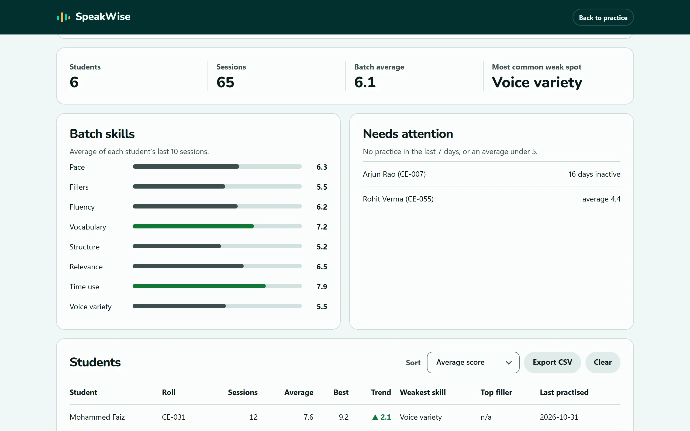

No one to practise with
Mock interviews depend on seniors, friends or paid coaching. SpeakWise is there at 11 pm before your interview.
Free speaking coach for campus placements
SpeakWise listens while you answer and scores your pace, filler words, pauses, structure, voice and eye contact, with a reason for every score. No sign-up, and your recordings never leave your device.


Built for
Why SpeakWise
You can know the answer and still lose it to a rushed pace, a string of “basically”s or a story with no ending. Those habits only show up when you say it out loud.
Mock interviews depend on seniors, friends or paid coaching. SpeakWise is there at 11 pm before your interview.
“Be more confident” doesn't tell you what to change. Every SpeakWise score comes with the number behind it and one thing to try.
Fillers, long pauses and a flat voice are what interviewers notice. You can only fix what you can hear.
How you practise

Pick from 140+ questions, speak for 30 seconds to 2 minutes, and get a full report. Try the same question again and the report shows what improved.

Four questions in a row, like a real round. Each answer is followed by a follow-up question, so you practise thinking on your feet.

Pick a side, give your opening, then answer another participant's counter-argument in 30 seconds. You're scored on how well you acknowledge their point and push back.
Feedback
SpeakWise separates what it can count from what it can only estimate, and shows the evidence for both. Tap any score to see the reason.
Everything included
Questions in the style of IT services, product companies, banks and core engineering firms, with tips for each round.
Paste your resume and get questions about your own projects, internships and skills. Your resume is never stored.
English, Hinglish, Hindi, Marathi, Tamil, Telugu and Bengali, with filler words for each.
Answer the same question again and see the change, skill by skill.
Optional. Checks whether you stayed on topic and rewrites your answer in better words, keeping your real examples.
Add it to your home screen, and the topic bank works even without a connection.
Score trend, skill averages, streaks and your most-used filler words, all in one place.
A new question every day, and a reminder you can add to your calendar.
How it works
Choose a category or company pack, or let Smart pick choose the area you're weakest in. You get 15 seconds to plan.
Answer out loud, with the camera on or off. The waveform shows the shape of your answer as you go.
Read the score to fix first, try the tip, and answer again. The comparison shows whether it worked.


For placement cells
Students download a progress file with their scores and send it to you. Add the files to the dashboard to see the batch's weak spots, who's improving, and who hasn't practised in a week.

Post SpeakWise in your batch's WhatsApp group. There's nothing to install and no accounts to create.
They practise for a week or two, then press Download progress file. It holds scores, dates and categories only.
Add the files. Everything is read in your browser and nothing is uploaded. Export a CSV for your records.
Privacy
Pitch, pauses and eye contact are measured in your browser. Recordings exist only until you close the page.
The AI coach is optional. When you use it, only your transcript text goes to Google's Gemini API, never audio or video. Chrome and Edge use their own speech service to turn speech into text.
Your history lives in your browser, not on a server. One button in the app deletes all of it.
FAQ
Yes. There's no account, no trial and no paid tier. The optional AI coach uses Google's free Gemini tier on the site's server.
Chrome or Edge on Android, Windows, Mac or Linux give the full experience, including live transcription. On iPhone and other browsers you can still record, get pace, pause and voice scores, and type what you said for the rest.
Speech recognition comes from your browser and can mishear accents. That's why every report lets you correct the transcript and re-score it, and why it warns you when recognition confidence is low.
Pace, fillers, pauses, time, voice and eye contact are measured directly. Structure, relevance and vocabulary are estimates, and are labelled that way. Use them as a guide to what to practise, not as a grade.
Yes: English, Hinglish, Hindi, Marathi, Tamil, Telugu and Bengali. Outside English and Hinglish, relevance is checked by the AI coach and structure isn't scored yet.
No. Audio and video are analysed in your browser and are gone when you close the page, unless you download the recording yourself.
Share the link, ask students to download their progress file after a week or two, and add the files to the dashboard. Files contain scores, dates and categories only: no recordings, transcripts or topics.
One minute is enough to start.
Start practising free